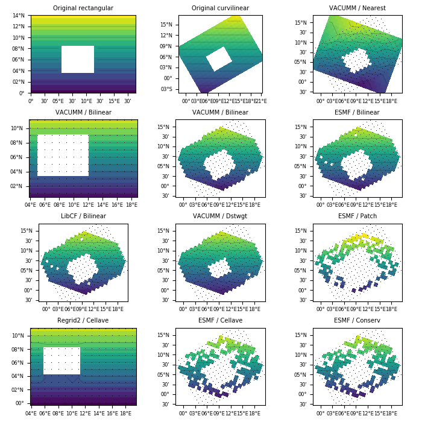

3.5.6.34. test_regrid_regrid2d.py – Test the regrid2d() function¶

"""Test the :func:`~vacumm.misc.grid.regridding.regrid2d` function"""
from vcmq import (P, N, MV2, code_file_name, os, add_grid, rotate_grid, set_grid,
create_grid, rc, rcdefaults, plot2d, regrid2d, create_time)
# Input grid and data
nxi = 20
nyi = 15
nt = 5
# - rect
xi = N.arange(nxi*1.)
yi = N.arange(nyi*1.)
ti = create_time((nt, ), 'years since 2000')
gridri = create_grid(xi, yi)
xxri, yyri = N.meshgrid(xi, yi)
zzri = N.ma.resize(yyri, (nt, nyi, nxi))
zzri[:, int(nyi*0.3):int(nyi*0.6), int(nxi*0.3):int(nxi*0.6)] = N.ma.masked
zzri[1] = N.ma.masked
varri = MV2.asarray(zzri)
varri.setAxis(0, ti)
set_grid(varri, gridri)
# - curv
gridci = rotate_grid(gridri, 30)
xxci = gridci.getLongitude().getValue()
yyci = gridci.getLatitude().getValue()
zzci = N.ma.resize(yyci, (nt, nyi, nxi))
zzci[:, int(nyi*0.3):int(nyi*0.6), int(nxi*0.3):int(nxi*0.6)] = N.ma.masked
zzci[1] = N.ma.masked
varci = MV2.asarray(zzci)
varci.setAxis(0, ti)
set_grid(varci, gridci)
# Output positions
nxo = 25
nyo = 18
# - rect
dxi = xi[-1]-xi[0]
dyi = yi[-1]-yi[0]
xro = N.linspace(xi[0]+dxi*0.2, xi[-1]+dxi*0.2, nxo)
yro = N.linspace(yi[0]-dyi*0.2, yi[-1]-dyi*0.2, nyo)
gridro = create_grid(xro, yro)
# - curv
xco = N.linspace(xi[0], xi[-1], nxo)
yco = N.linspace(yi[0], yi[-1], nyo)
gridco = rotate_grid((xco, yco), -20)
# Interpolate and Plot
# - original
rc('font', size=6)
rc('axes', labelsize=7)
kw = dict(show=False, axes_aspect=1, colorbar=False, grid=False, linewidth=.3,
cmap='viridis')
kwg = dict(edges=False, centers=True, markersize=2, alpha=1)
ip = 1
plot2d(varri[0], title='Original rectangular', figure=10,
figsize=(7, 7), subplot=(4,3,ip), **kw);ip+=1
plot2d(varci[0], title='Original curvilinear', subplot=(4,3,ip), **kw);ip+=1
# - nearest
varo = regrid2d(varci, gridco, method='nearest', tool='vacumm')
plot2d(varo[0], title='VACUMM / Nearest', subplot=(4,3,ip), **kw);ip+=1
add_grid(gridci, **kwg)
# - bilin r2r / vacumm
varo = regrid2d(varri, gridro, method='bilinear', tool='vacumm')
plot2d(varo[0], title='VACUMM / Bilinear', subplot=(4,3,ip), **kw);ip+=1
add_grid(gridri, **kwg)
# - bilin c2c / vacumm
varo = regrid2d(varci, gridco, method='bilinear', tool='vacumm')
plot2d(varo[0], title='VACUMM / Bilinear', subplot=(4,3,ip), **kw);ip+=1
add_grid(gridci, **kwg)
# - bilin c2c / emsf
varo = regrid2d(varci, gridco, method='bilinear', tool='esmf')
plot2d(varo[0], title='ESMF / Bilinear', subplot=(4,3,ip), **kw);ip+=1
add_grid(gridci, **kwg)
# - bilin c2c / libcf
varo = regrid2d(varci, gridco, method='bilinear', tool='libcf')
plot2d(varo[0], title='LibCF / Bilinear', subplot=(4,3,ip), **kw);ip+=1
add_grid(gridci, **kwg)
# - dstwgt c2c / vacumm
varo = regrid2d(varci, gridco, method='dstwgt', tool='vacumm')
plot2d(varo[0], title='VACUMM / Dstwgt', subplot=(4,3,ip), **kw);ip+=1
add_grid(gridci, **kwg)
# - patch c2c / emsf
varo = regrid2d(varci, gridco, method='patch', tool='esmf')
plot2d(varo[0], title='ESMF / Patch', subplot=(4,3,ip), **kw);ip+=1
add_grid(gridci, **kwg)
# - cellave r2r / regrid2
varo = regrid2d(varri, gridro, method='cellave', tool='regrid2')
plot2d(varo[0], title='Regrid2 / Cellave', subplot=(4,3,ip), **kw);ip+=1
add_grid(gridri, **kwg)
# - cellave c2c / esmf
varo = regrid2d(varci, gridco, method='cellave', tool='esmf')
plot2d(varo[0], title='ESMF / Cellave', subplot=(4,3,ip), **kw);ip+=1
add_grid(gridci, **kwg)
# - conserv c2c / esmf
varo = regrid2d(varci, gridco, method='conserv', tool='esmf')
plot2d(varo[0], title='ESMF / Conserv', subplot=(4,3,ip), **kw);ip+=1
add_grid(gridci, **kwg)
P.tight_layout()
P.savefig(code_file_name(ext='png'))
rcdefaults()
P.close()